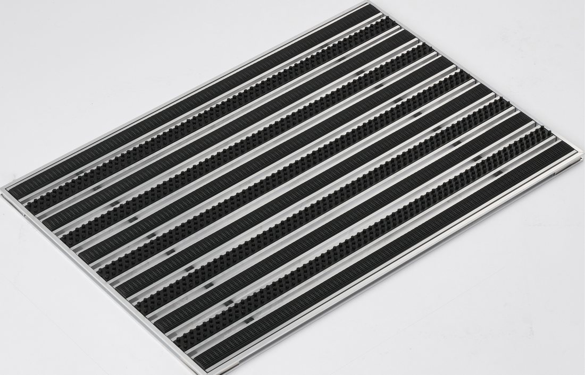

Wycieraczka mix guma + szczotka, profil niski
Mix gumowo-szczotkowy łączy dwa wkłady odporne na pogodę. Szczotka zdrapuje brud, a guma jest łatwa do czyszczenia. Dobry wybór na zewnątrz i tam, gdzie ruch jest duży.
Profil niski (12/30 mm): do domów i biur.
Mata 40×60 cm już od 194,64 zł netto (239,41 zł brutto). Cena zależy od wymiaru, dokładną kwotę policzysz w konfiguratorze.
| Profil | Profil niski (12/30 mm) |
| Wkład | Mix guma + szczotka |
| Wymiar | Na wymiar, dowolna długość i szerokość |
| Cena za m² | 811,00 zł netto |
| Próg najazdowy | Aluminiowy, do domówienia w konfiguratorze (68 zł netto / mb) |